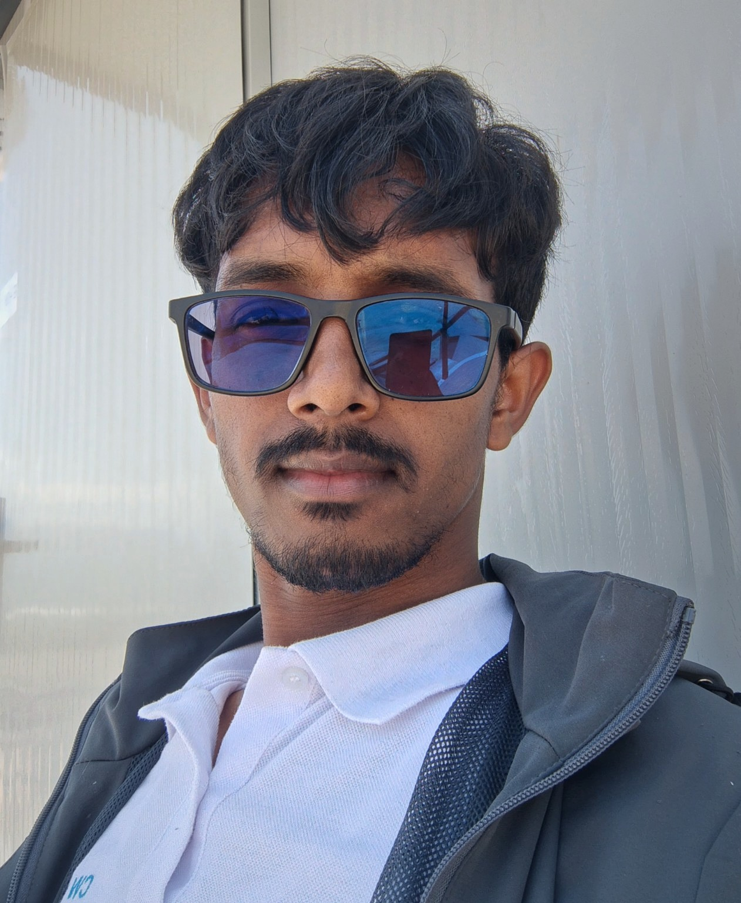

Current
Focus
Technology and system building
Working across software development, infrastructure thinking, and connected systems with a focus on practical implementation and research-driven problem solving.
I’m Avi Vishwakarma, a developer focused on modern web experiences, Android and Kotlin projects, API-driven applications, computer networking, and CCTV security systems. I turn practical ideas into resilient systems and useful digital experiences.

I work across software development, API and web application projects, Android and Kotlin experiments, computer networking, CCTV and security systems, and applied research in AI and automation.
Responsive interfaces, interactive user experiences, and modern web application design.
API architecture, data flow, integrations, and reliable application logic.
Routing, LAN/WAN troubleshooting, infrastructure analysis, and system reliability work.
Camera, NVR/DVR, and network configuration for connected monitoring and security environments.
Technical exploration, experimentation, and practical investigation of emerging tools and systems.
Technical focus areas include web interfaces, application logic, API usage, Android and Kotlin work, computer networking, and connected security systems.
Component-driven interfaces and stateful experiences.
Modern responsive websites and interactive web applications designed for clarity and usability.
Frontend, backend APIs, data handling, and integrated application architecture.
Setup, troubleshooting, infrastructure review, and reliable system connectivity.
IP and analog camera deployment, network configuration, monitoring, and system support.
Architecture decisions, troubleshooting, and practical technology analysis for real-world systems.
Exploration of AI use cases, software experimentation, and technical documentation.
Public work highlights web applications, API integrations, Android and Kotlin experiments, AI prototypes, and practical networking and CCTV/security systems work.
Daily life planning and AI coaching concepts centered on productivity, habit support, and personal growth.
A weather dashboard that fetches real-time data with location search, forecast views, and data-driven visualizations.
Android-focused experimentation and mobile application work centered on practical utility and Android tooling.
Technology work extends into the infrastructure that supports connected applications, monitoring systems, and dependable business operations.
Applied technical investigation spans AI, networks, automation, system analysis, and practical experimentation across digital and connected environments.
Exploring practical AI workflows, interfaces, and interaction patterns that support useful experimentation.
Studying topology, routing, troubleshooting, and the relationship between connected systems.
Reviewing secure implementation patterns, monitoring practices, and risk-safe technology design.
Investigating image-based systems, recognition workflows, and visual processing opportunities.
Connecting camera systems with network infrastructure, storage, monitoring, and operational workflows.
Building efficient workflows and connected solutions through systematic automation and integration.
Professional experience details are intentionally limited to verified information and practical technical work across software, networks, and connected systems.
Working across software development, infrastructure thinking, and connected systems with a focus on practical implementation and research-driven problem solving.
Avi Vishwakarma’s work centers on web development, Android and Kotlin experimentation, API-driven projects, AI exploration, and computer networking and CCTV/security systems work.
$ status --identity > Avi Vishwakarma > software / infrastructure / security > mode: research + engineering $ connect --available > github: github.com/Dev-avi-A1 > website: anupbk.com.np > contact: public details are configured as they become available $ ./build-something-useful